使用 kt-connect 本地调试 k8s 集群内服务
 times read
times read
Contents
一、kt-connect 介绍
背景
影响软件开发效率最大的问题依然是集成的问题，DevOps 通过持续交付流水线的方式不断的对软件进行集成，但是 DevOps 仍然存在很多问题，比如：
- 开发环境崩溃
- 改代码后部署时间过长
- 疑难问题要多次加日志来排查
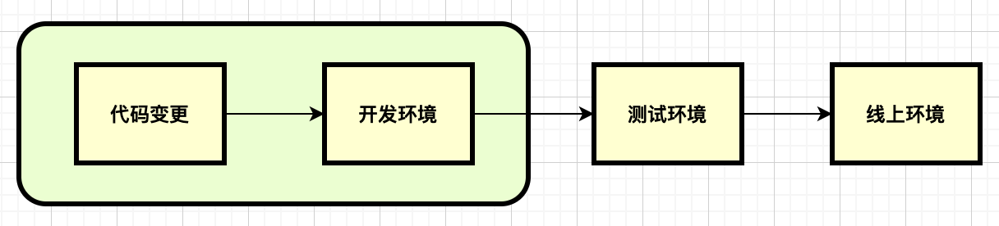
对于我们来说，问题主要是第二个，目前做开发验证有三种方式：
- 拷贝代码到 CD 环境，通过 kubectl patch 挂载路径执行，流程繁琐
- 在开发环境装 cloud ide 来调试：类似 code-server 和 theia 改造而来
- 提交代码后，DevOps 第二天部署好后验证，需要合并代码验证时间长
介绍
kt-connect 是阿里开源的一个工具，是轻量级的面向 k8s 用户的开发测试环境调试工具，开源地址 https://github.com/alibaba/kt-connect。工具核心功能：
- 建立本地到集群的通道
- 建立集群到本地的通道
- 提升开发环节的效率问题
- 解决开发测试环境的复用问题
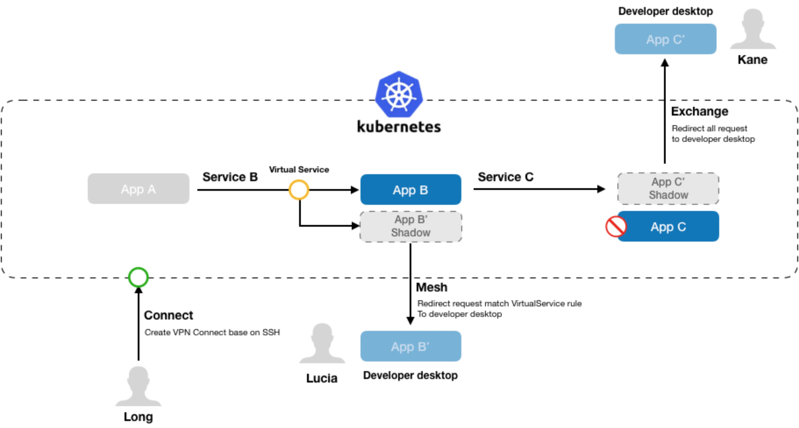
二、kt-connect 使用流程
安装
安装 sshuttle：https://github.com/sshuttle/sshuttle
安装 kt-connect：https://github.com/alibaba/kt-connect/blob/master/docs/en-us/downloads.md
Connect 连接
Connect 建立本地到集群的 VPN 网络，同时将 Kubernetes 集群的 DNS 解析能力整合到本地，让用户可以直接通过 PodIP， ClusterIP 以及 DNS 域名访问到集群内的服务。下面以服务 ecp-dashboard-api 来做使用验证：
-
拷贝测试环境~/.kube/config 到本地~/.kube/config
1 2➜ ~ kubectl get ns | grep ems ems Active 8d -
sudo ktctl –debug -n ems connect
1 2 3 4 5 6 7 8 9 10 11 12 13查看服务 ecp-dashboard-api svc ip 和 pod ip： [root@node-4 ~]# kubectl get svc -nems | grep ecp-dashboard-api ecp-dashboard-api-int ClusterIP 10.222.235.183 <none> 80/TCP 8d [root@node-4 ~]# kubectl get -nems pods -owide| grep ecp-dashboard-api ecp-dashboard-api-596d5df985-fb4mj 1/1 Running 0 26h 10.232.0.240 node-5 ecp-dashboard-api-596d5df985-qxbnp 1/1 Running 0 26h 10.232.1.184 node-6 ecp-dashboard-api-596d5df985-s7qf4 1/1 Running 0 26h 10.232.5.91 node-4 本地通过 cluster_ip/service_name/pods_id 访问： curl -v "http://10.222.235.183:80/ecp-dashboard-api/api/v1/product/obtains/tag-crd" curl -v "http://ecp-dashboard-api-int:80/ecp-dashboard-api/api/v1/product/obtains/tag-crd" curl -v "http://10.232.0.240:8000/ecp-dashboard-api/api/v1/product/obtains/tag-crd"能正常访问到 ecp-dashboard-api 服务：
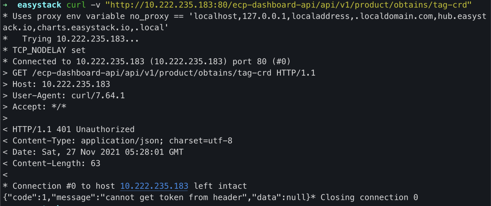
-
拷贝开发环境中，ecp-dashboard-api 的配置文件 config.toml 到本地
-
本地 IDE 中指定启动命令和配置文件，启动 IDE 调试
-
使用接口测试工具，请求本地启动的服务
1 2 3curl -v "http://127.0.0.1:8000/ecp-dashboard-api/api/v1/product/obtains/tag-crd" {"code":1,"message":"cannot get token from header","data":null} 这里返回校验出错，是业务代码中接受到请求后，校验到没有用户信息返回的
这种方式优点：是可以连接依赖的 k8s 集群服务，不会停掉集群的相应服务，不影响其他用户。
缺点：是依赖接口测试工具，测试稍复杂。
Exchange 连接
Exchange 命令将集群内的流量打到开发者的本地进程，通过在集群内部署代理容器，替换集群内的原有应用，并将所有对代理容器的请求直接转发到本地端口。继续以服务 ecp-dashboard-api 来做使用验证：
- 参考 connect 流程，本地先启动 ecp-dashboard-api 调试
- 等待以下命令成功，查看服务对应的 deploy，原有的 deploy 副本置为 0，新生成一个 ecp-dashboard-api-kt-xx 的 deploy，副本为 1，这个 deploy 对应的 pod 就是负责转发请求到本地的
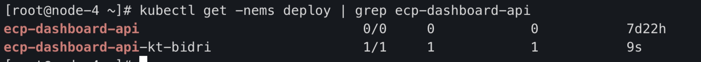
1sudo ktctl -n ems exchange ecp-dashboard-api --expose 8000, - 在开发环境点击页面，请求就转发到本地了 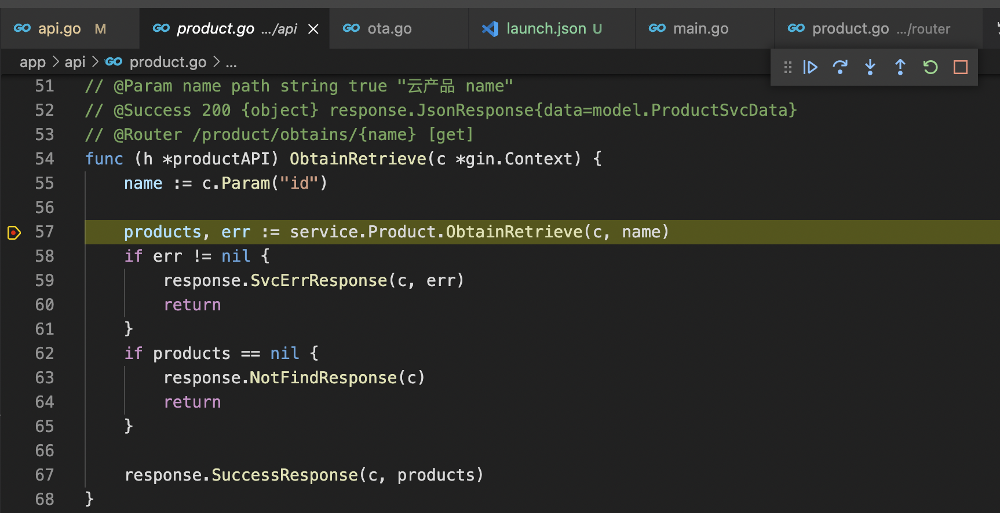
这种方式优点：集群可访问本地服务，调试只需要在网页上操作即可。
缺点：是会替换掉集群的对应服务，多人调试同一个服务会阻塞，并且容易使环境崩溃。
Mesh 连接
Mesh 命令和 exchange 相似，但 exchange 命令会独占服务，导致阻塞和环境不稳定。
Mesh 则是在保持原有应用 Pod 不变的前提下，创建一个新的代理容器并且继承原应用的所有标签，但是会新增加一个随机的 version 标签。
配合 Istio 的流量规则，只转发有特殊标记的的请求到本地：
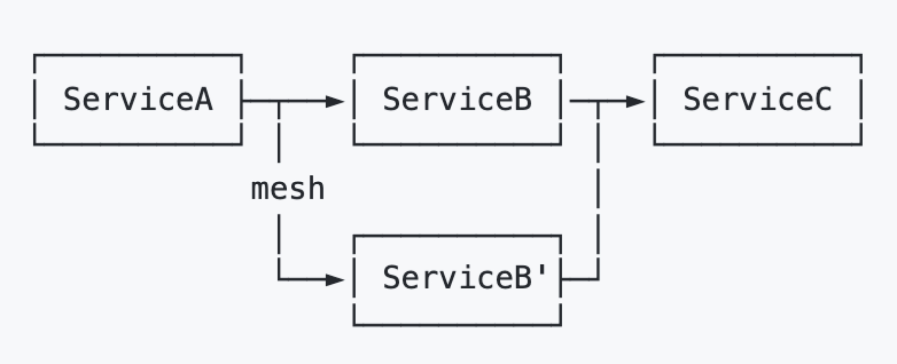
三、kt-connect 原理
connect 原理
通过 connect 命令日志可以看到步骤分为： 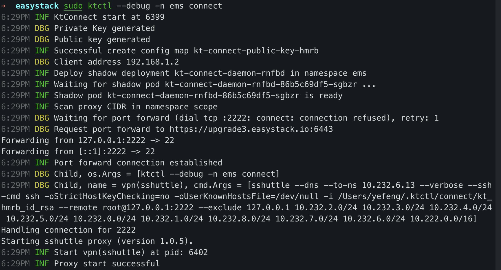
-
在集群空间创建 shadow deploy：kt-connect-daemon-xx，暴露 22 端口
-
建立端口转发：kubectl -n default port-forward kt-connect-daemon-xx 2222:22
-
获取 k8s 集群的 CIDR 集合（svc ip 和 pod ip 地址范围），使用 sshuttle 捕获集群请求，并转发给 shadow pod
1sshuttle --dns --to-ns 10.232.6.13 --verbose --ssh-cmd ssh -oStrictHostKeyChecking=no -oUserKnownHostsFile=/dev/null -i /Users/yefeng/.ktctl/connect/kt_hmrb_id_rsa --remote root@127.0.0.1:2222 --exclude 127.0.0.1 10.232.2.0/24 10.232.3.0/24 10.232.4.0/24 10.232.5.0/24 10.232.0.0/24 10.232.1.0/24 10.232.8.0/24 10.232.7.0/24 10.232.6.0/24 10.222.0.0/16 -
shadow pod 将请求转发给对应的后端
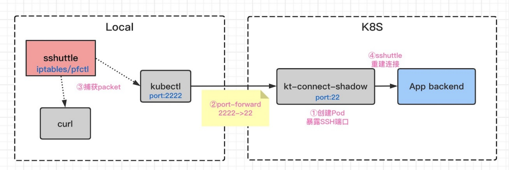
Exchange 原理
通过 exchange 命令日志可以看到步骤分为： 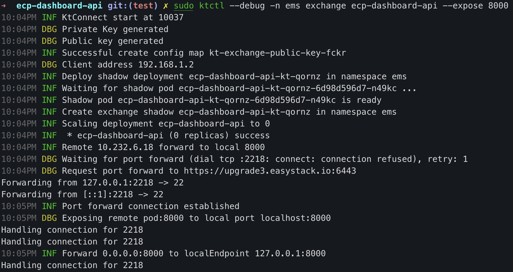
-
新增 shadow deploy，使用的 Label 和原 deploy 一样
-
设置原服务 deploy 副本为 0
从 pod 变化上也可以看到： 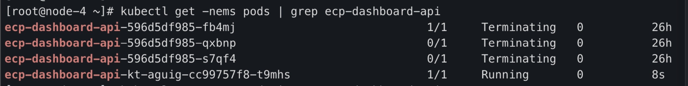
-
在 Local 和 K8s 之间建立通道：kubectl -n ems port-forward ecp-dashboard-api-kt-xx 2226:22
-
ssh 远程转发，将对 shadow pod 的请求转发到本地服务的 8000 端口：
1ssh -oStrictHostKeyChecking=no -oUserKnownHostsFile=/dev/null -R 8000:127.0.0.1:8000 root@127.0.0.1 -p2226 sh loop.sh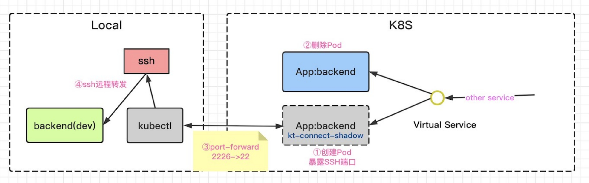
-
注：0.2.0 版本开始，使用 shadow pod 代替 shadow deployment，exchange 不生成 deploy 了
四、使用建议
- 在开发初期，使用 connect 验证整体流程，避免环境崩溃
- 在开发后期，代码稳定后，使用 exchange 直接在网页测试
- 为了环境可以多人复用，建议开发测试环境默认安装 istio，使用 mesh 来分流测试
- 改造 kt-connect 的 exchange 命令，不替换服务而是复制请求
参考
Author yefengzhichen
LastMod 2022-09-03